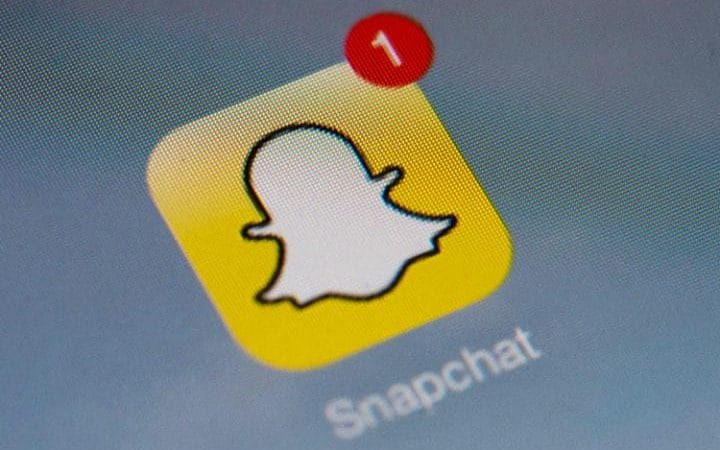

Snapchat picks London for international base in boost for UK tech
Snapchat has set up an international base in London and will book sales from outside of the US in the UK. The move is a significant departure from other internet companies like Google and Facebook, which have registered the majority of their international advertising revenues in Ireland, as well as a boost to the British tech sector after the Brexit vote. Snap, the photo-sharing app's parent company, said "the UK’s strong creative industries make this a great place to build a global business".
A spokesman said the move was a commonsense decision that aligned its tax affairs with the business itself. Snap has 75 employees in the UK and plans to expand in the future, as well as more than 10 million daily users.
It comes after criticism of Google, Facebook and others for routing sales from the UK and elsewhere to Ireland, where they benefit from a low corporation tax rate, despite having significant operations in Britain. The two companies have since taken steps that will see them pay more to the exchequer.

Snap's revenues from countries where there is not a local salesforce will be registered in the UK because they will be handled by sales staff in London run by Claire Valoti, formerly a senior Facebook UK executive. Ms Veloti said: "We believe in the UK creative industries. The UK is where our advertising clients are, where more than 10 million daily Snapchatters are, and where we’ve already begun to hire talent."
Matt Hancock, the digital minister, said it was "another vote of confidence in our tech economy", following recent hiring commitments from Google, Facebook and Apple. Although half of Snapchat's users are outside the US, the majority of its revenues are from America and the company remains lossmaking, so there are unlikely to be significant tax liabilities at first.
Advertising group eMarketer predicts that just 5pc of Snap's ad revenues were non-US in 2016, but that this will rise to 25pc in 2018 - an estimated $440m (£363m). Snap is gearing up for an initial public offering this year at a valuation of up to $25bn. The Snapchat app is used by more than 150 million people a day.